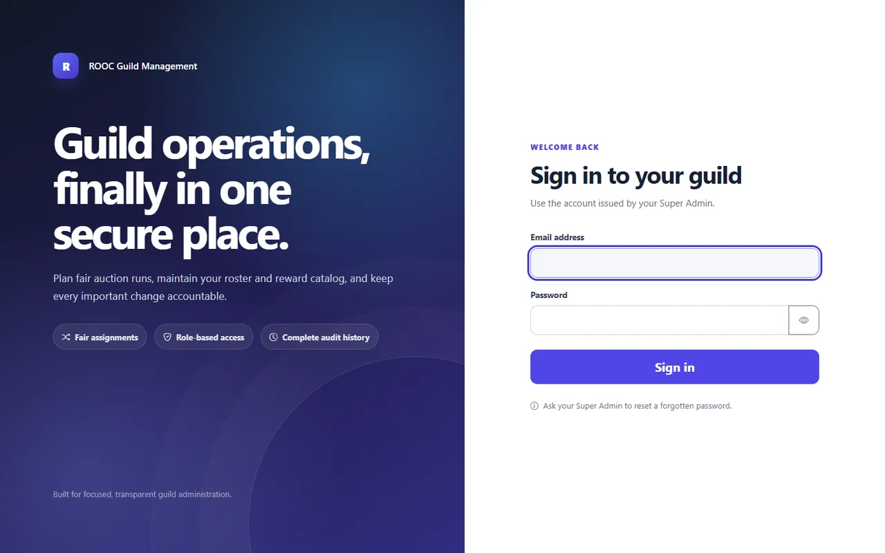

Side project · Live
ROOC Guild Management
The problem
A game guild was running loot auctions, member rosters, and reward payouts out of chat threads and a shared spreadsheet. Every contested item turned into an argument nobody could settle, because there was no record of who changed what, or which rule was in force when the change happened.
The real constraint
It looked like a tracking problem. It was a trust problem. A tool that let an administrator quietly edit history would have been abandoned inside a week — so the audit trail wasn't a feature to add later, it was the thing the whole design had to be built around.
What I built
Auction runs where the rules are fixed before bidding opens, role-based access with a Super Admin tier that issues accounts (no self-signup), a managed reward catalog, and an append-only history covering every meaningful change. Deployed on Cloudflare Workers, so there's no server for a volunteer admin to keep alive.
{kind=link}

Outcome Contested assignments now get settled by pointing at the log instead of re-arguing them. Onboarding an officer is one role change rather than a conversation about who to trust with the spreadsheet.